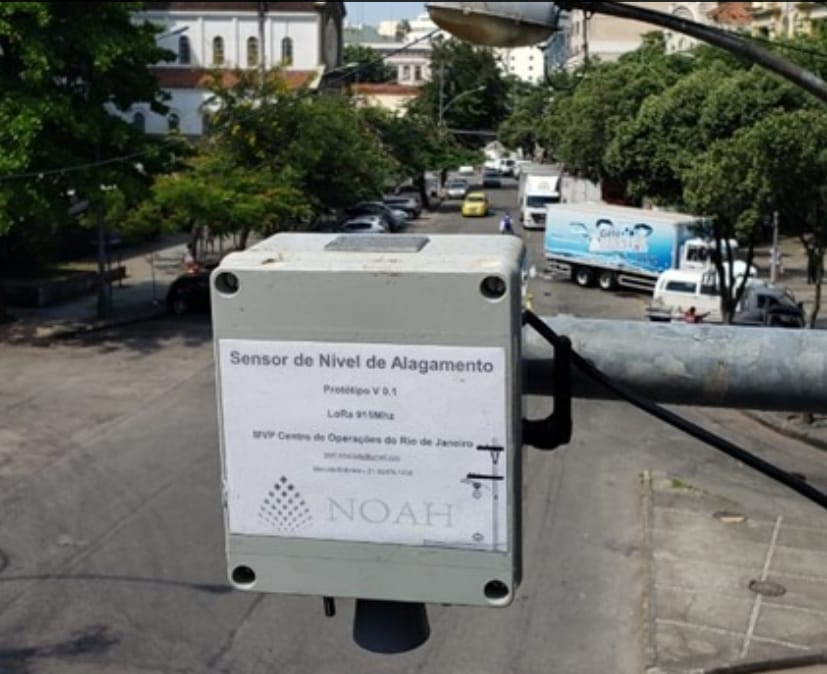

Monitoramento em Tempo Real com IA
Estamos utilizando a mais avançada tecnologia de Inteligência Artificial para proteger comunidades e prevenir desastres naturais.
Participe do nosso grupo no Telegram para receber informações em tempo real e ficar sempre informado:
 Acesse o Grupo do Telegram
Acesse o Grupo do Telegram
